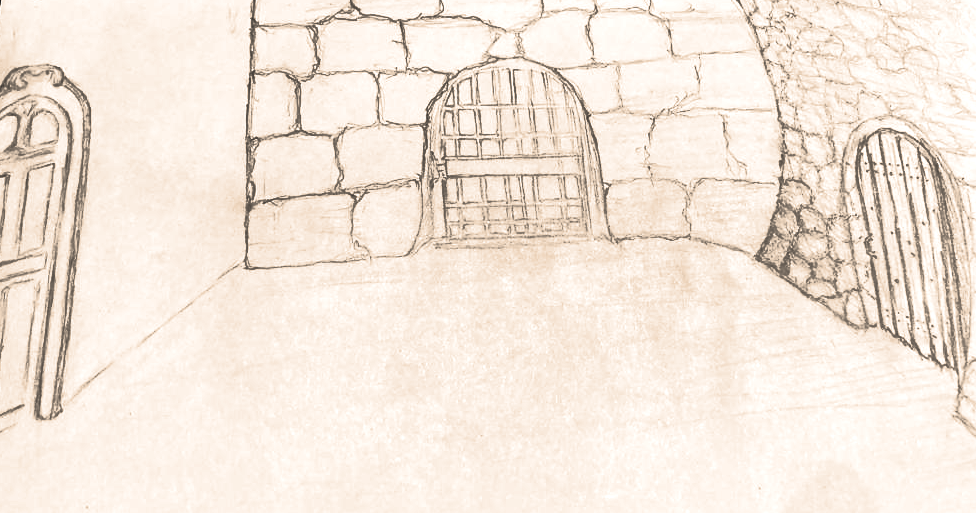
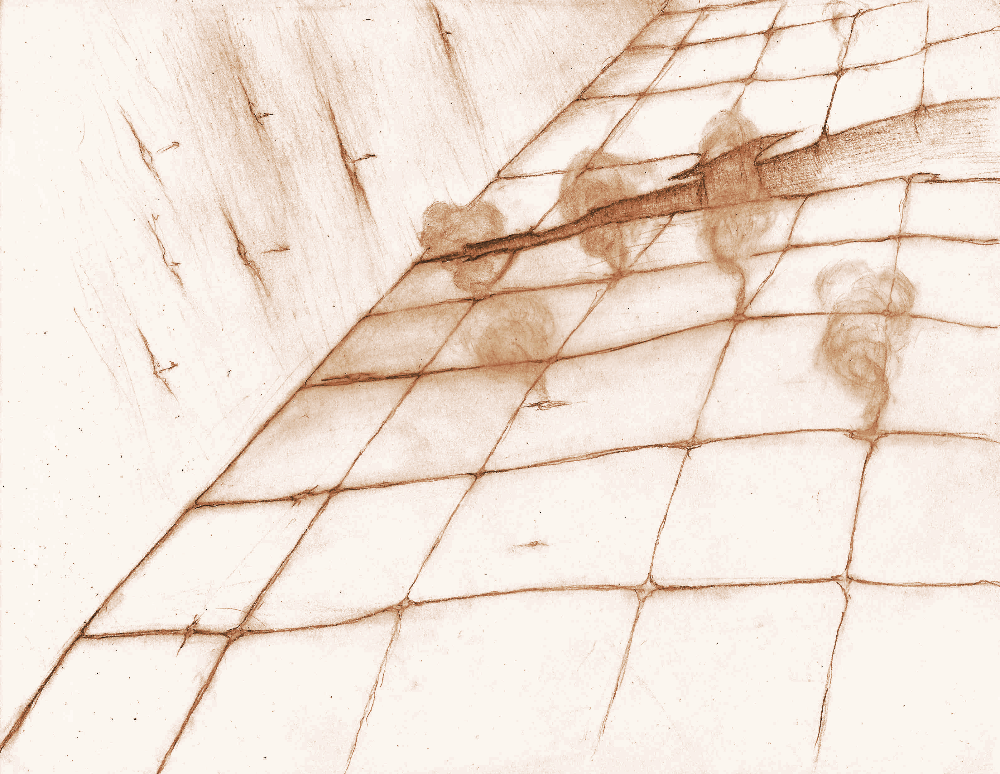
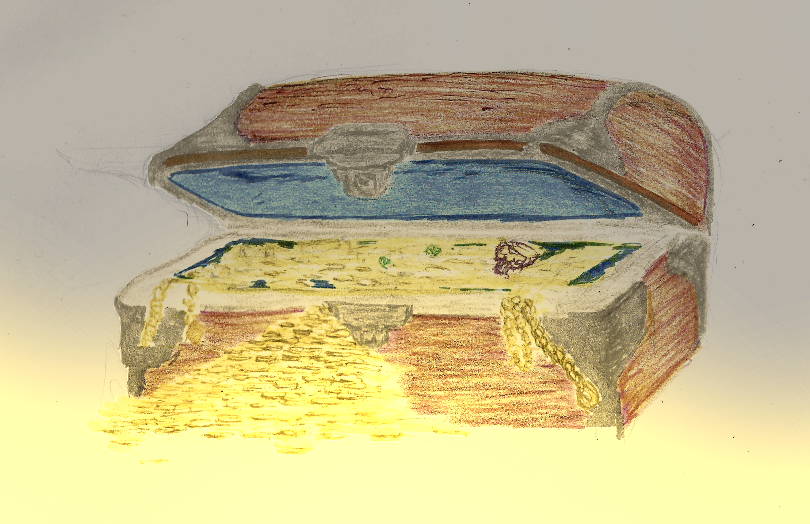
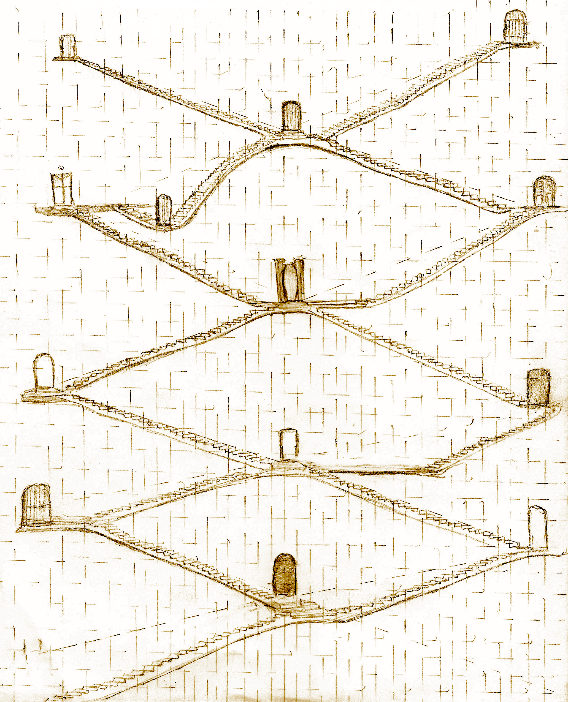

You'll find the information you need to make your way through the dungeon here, that is room layouts, contents and dungeon behavior.
We recommend you become somewhat familiar with the contents of this book, then return to it later to read in depth as needed.

For simplicity, rooms are described from the perspective of the entrance. An exit towards the front is considered "Door 1" or more concisely D1 (regardless of whether there is a door or just an open cave). To the left, is D2 and to the right is D3. Some exits can be seen in plain sight but some are hidden, these are depicted as Secret or S (S1, S2 or S3).
Roll a d6 to discover the room layout:
***D1***
* *
D2 D3
* *
***EN***
********
* *
D2 D3
* *
***EN***
***D1***
* *
S2 *
* *
***EN***
***D1***
* *
* S3
* *
***EN***
***S1***
* *
* D3
* *
***EN***
***S1***
* *
D2 *
* *
***EN***
Open doors can be traversed normally upon discovery; secret doors must be found before using, see searching & secret door detection below.
Once you determined the layout of the room, roll a d6 in the room contents table to determine what is actually in the room:
| Roll | Room Contents |
|---|---|
| You found a Trap. | |
| You face an Encounter, see Monster Almanac. | |
| Quest encounter or encounter if none, see Quest Catalog or Monster Almanac if none | |
| You find a Treasure. | |
| Quest event, see Quest Catalog. | |
| The room contains a Flight of Stairs. |
Hazard dice depict the dangerous nature of the dungeon, thrown after 4 non combat events.
Represent a sizable lapse of time spent out combat in a dungeon. Non Combat events are:
Whenever a trap is sprung, a combat initiated or a hazard die is thrown, the non combat event count goes back to 0.
Hazard Die Rolls depict events that take you by surprise when things seemed otherwise peaceful in the dungeon.
| Roll | Hazard |
|---|---|
| Quest Encounter | |
| Encounter | |
| Trap | |
| Fatigue | |
| Expiration | |
| No event |
An item in your possession expired, roll expiration table below to find out which:
| Roll | Item Expired |
|---|---|
| Rations | |
| Torch | |
| Cure Potion | |
| Antidote Potion | |
| Medicinal Potion | |
| Bandage set |
If the character doesn't own that item, then ignore the expiration. Otherwise, request that this item is moved to another slot to attempt to purify it later. Refusing causes other items in that slot to expire, though the player can choose to discard it instead. Torches are an exception, an expired torch is discarded automatically.

You'll find many perilous traps underground.
Roll a d6 to determine which trap you ran into:
| Roll | Trap | Description |
|---|---|---|
| Pit Trap | A pit opens below you, roll a dex save to avoid the trap or receive (dungeon_level)+d6 HP damage also your character is sprained. | |
| Poison Darts | Poison darts shoot out of the walls, roll a dex save or be poisoned. | |
| Toungues of Flame | You hear a click and tongues of flames shoot out in your direction, roll a dex save or receive (dungeon_level+1)d6 HP damage and loose one of your torches. | |
| Spikes | A weighted plate is pressed and spikes shoot forth, roll a dex save or receive (dungeon_level)d6+(dungeon_level) HP damage. | |
| Toxic Gas | Noxious gas floods the room, roll a body save or take (dungeon_level+1) HP damage and become diseased. | |
| Lightning Rune | You hear a hum then lightning is unleashed, roll a magic save or take (dungeon_level)d6+2 HP damage. |
In The Hunt For The Treasure Of Aural Hall, the player who entered the room or rolled hazard die has a chance to deactivate the trap so long as it has a set of thief's tools in its possession (it must already be in its inventory). To successfully disable a trap, you must throw a 1d6 and roll greater than (3+dungeon_level/2) see the Trap Deactivation Table.
If you succeed you deactivated the trap, if you fail the trap is sprung. Failure to deactivate the trap means all characters must save against the trap to avoid its effects.
An attempt at trap deactivation will consume a set of thieves tools regardless of outcome. The character must already have the set of thief's tools in its possession, there is just not enough time to borrow the tools from another player. Rogues get a +1 to trap deactivation rolls.
| Dungeon Level | Trap Disable Roll |
|---|---|
| 0 | 4 or greater |
| 1 | 4 or greater |
| 2 | 5 or greater |
| 3 | 5 or greater |
| 4 | 6 or greater |
| 5 | 6 or greater |
To find a secret door, you must roll a magic save. Elven keen senses give them an additional advantage gaining +2 on detection of secret doors; if the elf has no status ailments, it can ignore the +2 and choose to roll an additional d6 instead.
Searching is performed when attempting to Detect a Secret Doors. This is done in a similar manner to disabling a trap, a player must roll a d6 roll greater than (dungeon_level+1) with 1 always being failure and 6 always being a success. Elves and Rogues gain a +1 to search; these two bonuses are cumulative (an Elf Rogue gets a +2).
The process of searching is slow and counts as traversing a room for the purposes of hazard dice rolls.
To pick a lock a player must roll a d6 roll greater than (dungeon_level+1) with 1 always being failure and 6 always being a success. Rogues and Brownies gain a +1 to lock picking rolls. A Brownie Rogue gets a +2 to lock picking rolls.
The process of picking a lock counts takes time and counts as traversing a room for the purposes of hazard dice rolls.
Also Picking a lock consumes a lock-pickers kit.
Fortune favors the bold. Adventurers will find something in those chest that more or less matches what they need.

However things are not always what they seem when finding treasure you must roll to see what kind of treasure you found. Then, depending on the contents, refer to the proper table:
| Roll | Treasure | Description |
|---|---|---|
| Trapped | You found a trapped regular treasure. Disable the trap first, then view its contents. | |
| Mimic | Surprise attack. If in ground level (dungeon_level is 0), this is a regular treasure. | |
| Locked | Must expend a thieves toolkit to open, roll a dex save if failed the mechanism is jammed - This is a regular treasure. | |
| Locked | Must expend a thieves toolkit to open, roll a dex save if failed the mechanism is jammed - This is a regular treasure. | |
| Regular treasure | You find a regular treasure. | |
| Regular treasure | You find a regular treasure. |
You found an unlocked and unguarded treasure, roll the regular treasure contents table to find out what's inside:
Roll a d6 to discover the treasure's contents:
| Roll | Contents | Description |
|---|---|---|
| Weapon | You found a weapon, see weapons table. | |
| Gold | 100*(1+dungeon_level)d6 g. | |
| Rations | There are 3*(1+dungeon_level) of them; however you must roll a d6 equal to or greater to the level where they were found or these are spoiled and must be purified before consuming. | |
| Adventure gear | (dungeon_level) torches, thief's tools and fire oil (can be distributed between party members). | |
| Armor | You found a piece of armor, see armor table. | |
| Spell scroll | You found a magic scroll, see scroll table. |
Tables for each category of item you can find in the table above are outlined below, roll a d6 to see which item you found.
Roll a d6 to see which weapon you found inside the treasure:
| Roll | Contents | Description |
|---|---|---|
| Arrows | You find 10*(1+dungeon_level) arrows and 10*(dungeon_level+1) g. | |
| Bow and Arrows | You find 10 arrows and a +(dungeon_level)/2 bow, worth 50*(dungeon_level+1) g. | |
| One Handed Weapon | You find a +(dungeon_level)/2 One Handed Weapon worth 100*(dungeon_level) g. | |
| One Handed Weapon | You find a +(dungeon_level)/2 One Handed Weapon worth 100*(dungeon_level) g. | |
| Two Handed Weapon | You find a +(dungeon_level)/2 Two Handed Weapon worth 150*(dungeon_level) g. | |
| Ranged Weapon | You find a +(dungeon_level)/2 Ranged Weapon worth *150*(dungeon_level)*g and 300*(dungeon_level) g. |
As can be seen, level 0 weapons are not worth anything, but as can be seen they will become valuable later on.
Roll a d6 to see which piece or armor you found inside the treasure:
| Roll | Contents | Description |
|---|---|---|
| Shield | You find a +(dungeon_level)/2 Shield, worth 30*(dungeon_level) g. | |
| Shield | You find a +(dungeon_level)/2 Shield, worth 30*(dungeon_level) g. | |
| Helmet | You find a +(dungeon_level)/2 Helmet, worth 60*(dungeon_level) g. | |
| Bringandine | You find a +(dungeon_level)/2 Brigandine, worth 50*(dungeon_level) g. | |
| Chainmail | You find a +(dungeon_level)/2 Chainmail, worth 100*(dungeon_level) g. | |
| Platemail | You find a +(dungeon_level)/2 Platemail, worth 200*(dungeon_level) g. |
Roll a d6 to see which magic scroll you found inside the treasure:
| Roll | Contents |
|---|---|
| Illuminate | |
| Invisibility | |
| Protection | |
| Invigorate | |
| Stop | |
| Fireball |
Each of these scrolls can be consumed or learned upon reaching the surface.
You reached a flight of stairs, however upon descending you may find any sort of passages. Regardless, once you exit, you reach a lower level.

Once the stairs have been found you instinctively go down (you can choose to go back up the next turn, but first you descend). Then roll a d6:
Note that traversing a flight of stairs counts as traversing a room for the purposes of hazard dice rolls. Though this comes into effect after reaching your destination.
| Roll | Contents |
|---|---|
| You reach a normal room, roll for room layout then roll for room contents. | |
| You reach a normal room, roll for room layout then roll for room contents. | |
| You reach an empty room, roll for room layout. | |
| You meet someone on the stairs, roll for NPC. | |
| You reach a deteriorated shrine, roll for decadent holy shrine. | |
| You reach a well maintained shrine, roll for vibrant holy shrine. |
As soon as you enter a new room you should begin charting your map on a different page or a distant part of the page if you have space. Make sure to mark this initial room as the exit to the surface, see: making your way back.
Roll the room Contents Table, keeping in mind you are now one level deeper. Don't forget to notate the staircase in this room.
If you reach an empty room, you made it one level below. There are no monsters here but it's not a safe place to stay for long so you should continue exploring. Don't forget to make a note of the staircase in this room.
Well what do you know? It's a small dungeon after all.
| Roll | Item Expired |
|---|---|
| You meet a fellow adventurer. | |
| You meet a merchant. | |
| You meet a friendly ghost. | |
| You meet a merchant. | |
| You meet a friendly monster. | |
| You meet a merchant. |
In front is a somewhat solemn and battle hardened adventurer. The fact that this is a single person tells you all you need to know.
If your next quest objective requires that you talk to someone or find a clue, the adventurer will be willing to help (consider it solved).
If you lack food provisions, the adventurer will exchange 3 torches for a single day's worth of rations.
Otherwise, you exchange a look of acknowledgment and move on and reach an empty room, see above.
Friendly undead steer clear of Paladins, if you have a Paladin in your party you will instead simply reach a normal room. Otherwise, keep reading...
In front is a translucent figure, you don't feel malice or evil intent coming from it - perhaps, it's a fallen comrade.
If your next quest objective requires that you talk to someone or find a clue, the ghost will be willing to help but you'll have to roll a save against magic to understand what it's saying.
Otherwise, you move on and reach an empty room, see above.
In front is a menacing figure, but you don't feel malice or evil intent coming from it. However if you have a Paladin on your party, roll against (1+dungeon_level), if you fail the monster decides to ignore you, instead you will simply reach a normal room. Otherwise, keep reading...
If your next quest objective requires that you talk to someone or find a clue, the monster will be willing to help but you'll have to roll a save against body to understand what it's saying (body-talk).
Otherwise, you move on and reach an empty room, see above.
You meet a humanoid carrying a large backpack, at first it utters something monstrous then coughs a bit and communicates flawlessly in you language:
Greetings! It's a pleasure to meet such fine people in these depths, and I'm fortunate to have an assortment of goods at your disposal...
The merchant puts the backpack on the floor and soon has an improptu shop all laid out neatly (it's evident there's a lot of practice behind this).
The wares sold are the same as the surface but at twice the price. Still, the travel expenses are to be expected, oh and the pay for your items is exactly the same as the surface ... now why isn't this double?
Once you made your shopping you wave goodbye and move. You reach reach an empty room, see above.
This shrine has seen better days. It can protect you while you rest, but it can only do so once. Do you want to do it now or on your way back? If you do, you consume one of your rations.
Regardless you will exit to an empty room. If you choose to wait, be sure to make a note of the shrine as well as the stairs on that room.
You are a lucky traveller. You can rest freely here, and it will be waiting for you to rest as many times as needed. Just keep in mind, that it will not provide you with rations (you consume rations each time you rest, or get no benefits from it) and you should be fine. Naturally, this leads to an empty room below, be sure to make a note of the vibrant shrine as well as the stairs on that room.